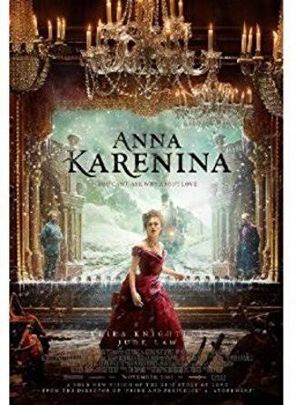

Literary critics, historicans ,avid readers, and even casual readers will all have different opinions on which novels is truly the "greatest book ever written." Is it a novel with beautiful, captivating figurative language?
Or one with gritty realism
? A novel that has had an immense social impact?
Or one that more has subtly affected the world? Here is the list of some novels that, for various reasons, have been considered some of the greatest works of literatuer ever written.
Any fan of the stories that involves juicey subjects like adultery, gambling, marriage plots,and, well,
Russain feudalism,would instantly place Anna Karenina at the peak of their "greatest novels"
And that's exactly the same ranking that published in itsentirely in 1878

"Leo Tolstoy wrote Anna Karenina primarily at his family estate, Yasnaya Polyana, located near Tula in west-central Russia."